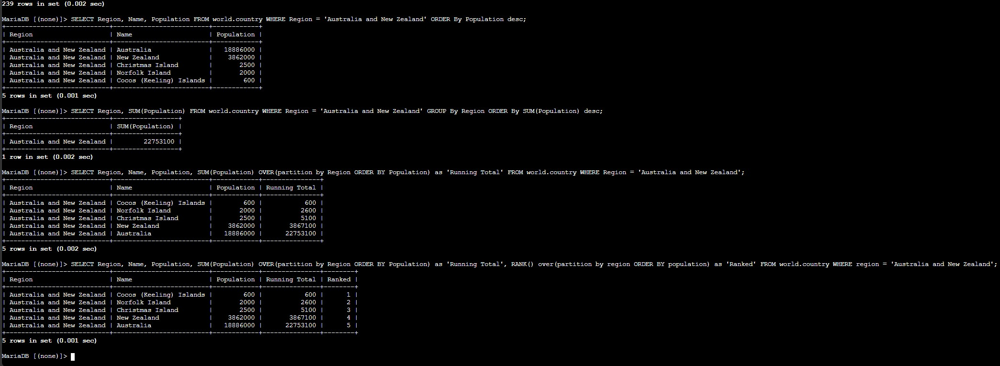
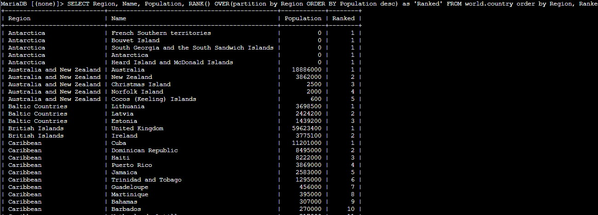

Filtered Region Query
Started with one region to make the ordering and grouping behavior easier to inspect.
This lab introduces two powerful ways to organize query results: the GROUP BY clause and window functions used with OVER(). The goal is to summarize populations by region, generate running totals, and rank countries inside their own regional group.
Connected to the world database, filtered the Australia and New Zealand region, ordered countries by population, summarized the region with GROUP BY and SUM(), generated a running total with SUM() OVER(), added ranking with RANK() OVER(), and solved the challenge by ranking every country inside its own region from largest to smallest population.
Started with one region to make the ordering and grouping behavior easier to inspect.
Compared one-row grouped output against row-by-row running totals and ranks.
Expanded the ranking logic to the full dataset and ordered the final output by region and rank.
The lab started with a filtered region and then gradually added grouping and ranking logic until the result set became analytical instead of descriptive only.
world database was available and queried world.country for rows where Region = 'Australia and New Zealand'.Population DESC so the most populated country in the region appeared first.GROUP BY Region together with SUM(Population) to calculate the total population of Australia and New Zealand as a single grouped result.SUM(Population) OVER(partition by Region ORDER BY Population) to generate a running total while still keeping each country visible in the output.RANK() OVER(partition by Region ORDER BY Population) to number the countries according to population within the same region.
RANK() OVER(partition by Region ORDER BY Population DESC) so each country received a rank relative to the other countries in its region.ORDER BY Region, Ranked so the rows stayed grouped and easy to review.
Main clauses and window functions used to summarize and rank the country data.
GROUP BY RegionGroups related rows so an aggregate function can return one summary result per region.
SUM(Population)Calculates the total population for the rows included in the current group or window.
SUM(Population) OVER(partition by Region ORDER BY Population)Returns a running total by region while still showing each original row.
RANK() OVER(partition by Region ORDER BY Population)Assigns a rank number within each region according to population order.
RANK() OVER(partition by Region ORDER BY Population DESC)Ranks the largest population as position 1 inside each region.
ORDER BY Region, RankedSorts the final challenge result so the rows remain grouped by region and rank.
GROUP BY summarizes related rows into one grouped result, which is useful for totals by category.OVER() keep the original rows visible while still adding calculations such as running totals and rank numbers.RANK() becomes much more useful when it is partitioned by region, because the position resets correctly for each group.This lab showed the practical difference between aggregation and analytical windowing. A grouped query reduces many rows into one summary, while a windowed query keeps each row visible and enriches it with extra context.
The challenge made that distinction very clear. Ranking countries by region required preserving every row, so the OVER() clause was the right tool instead of collapsing the data with GROUP BY.